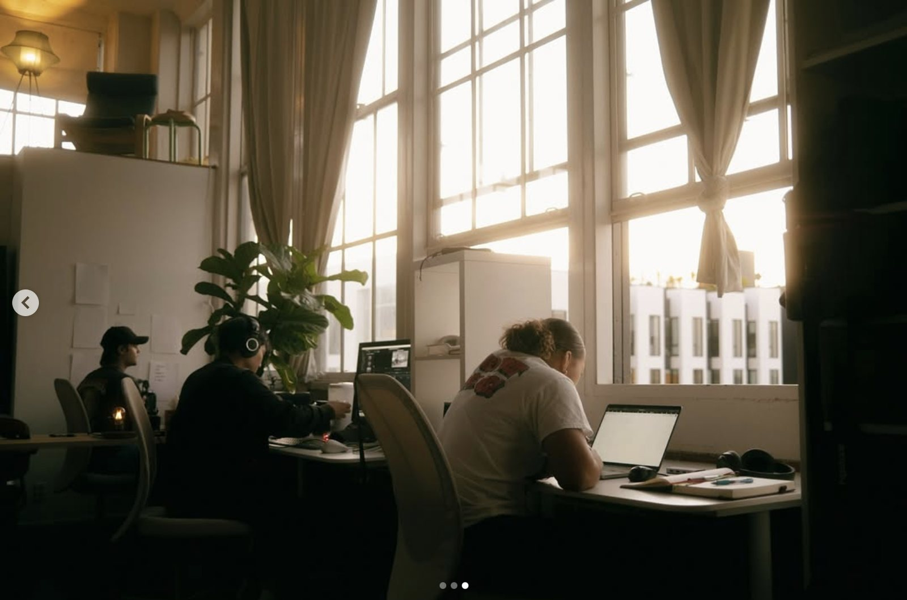
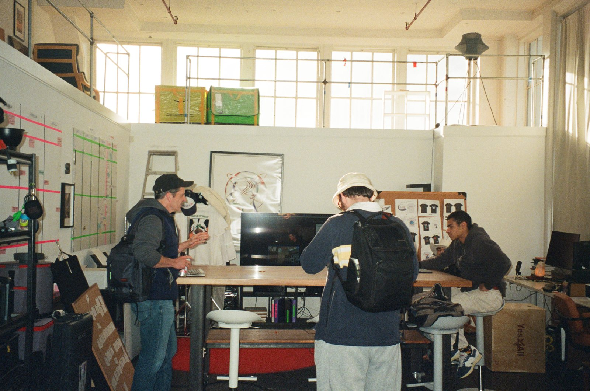
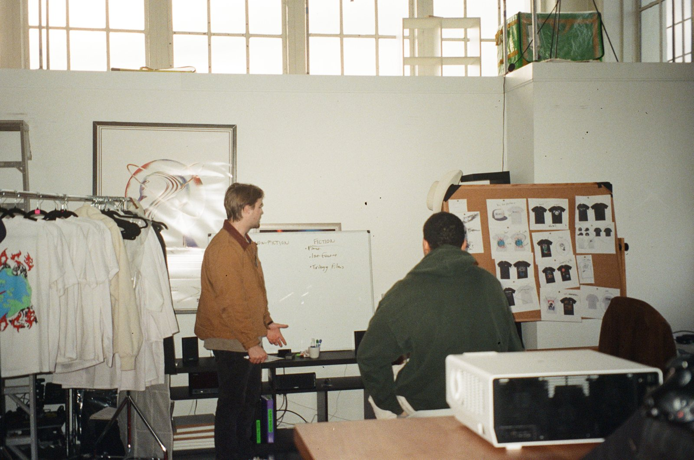
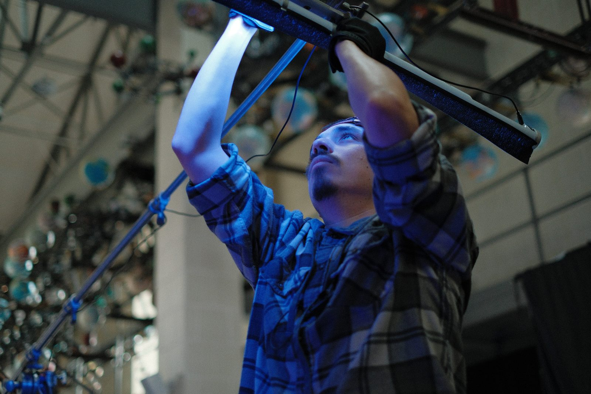
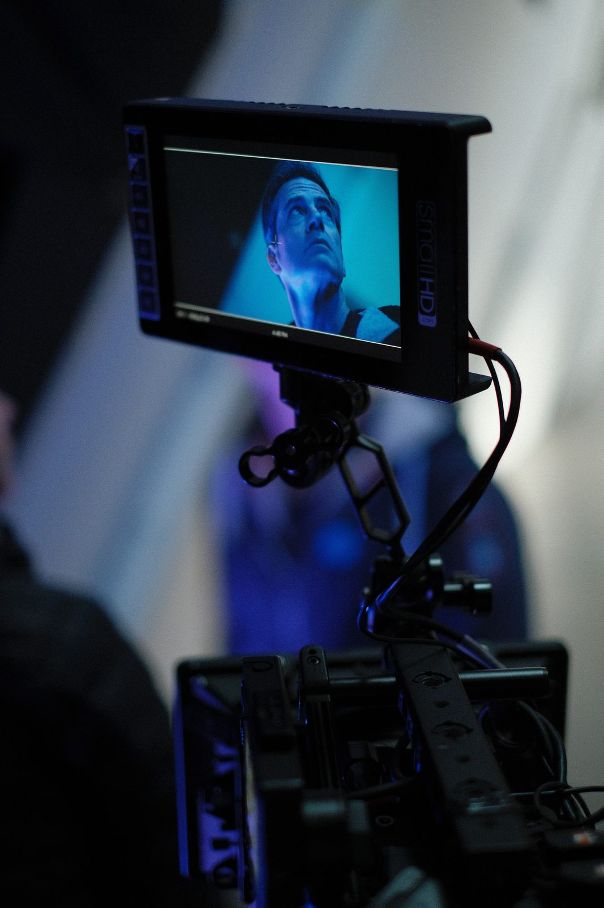
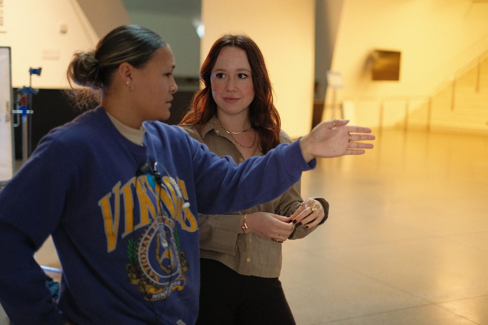
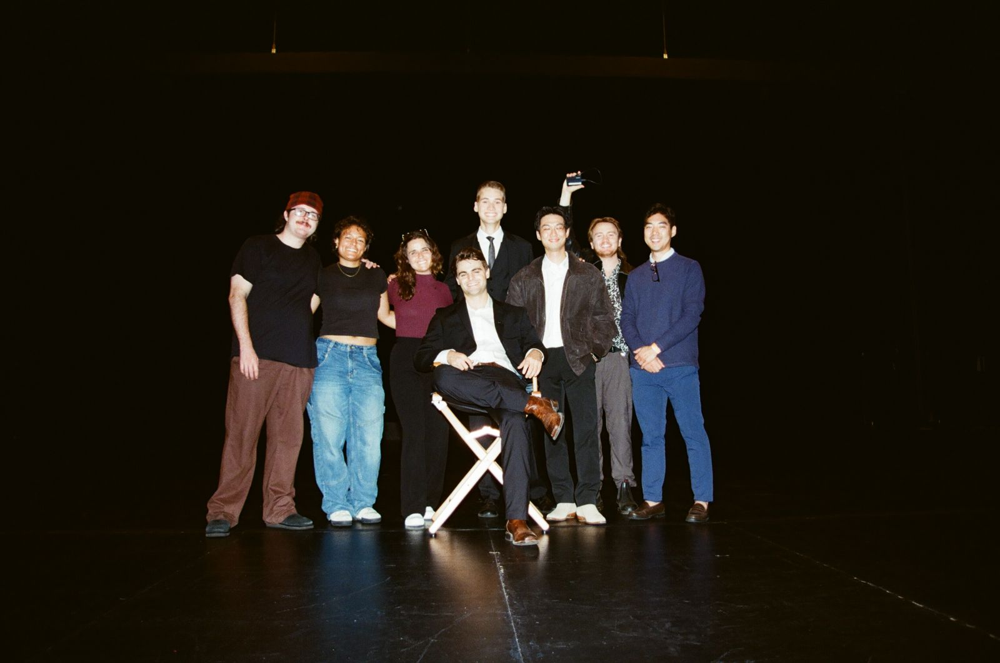
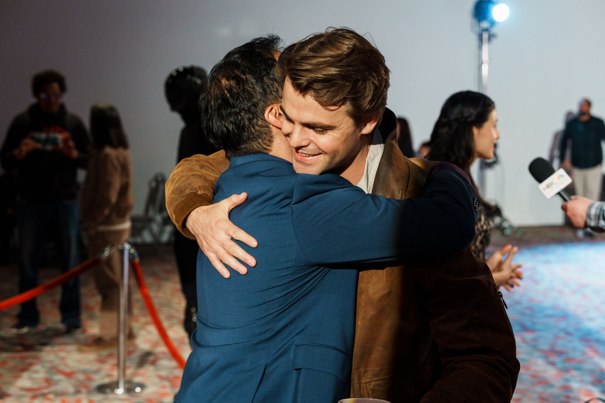
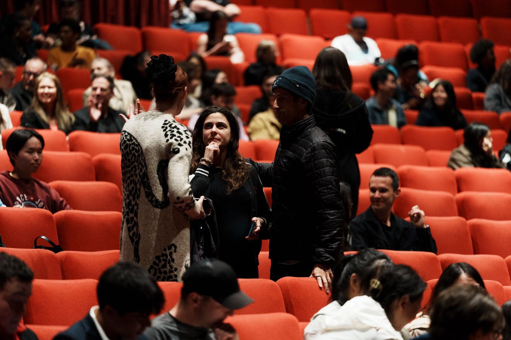
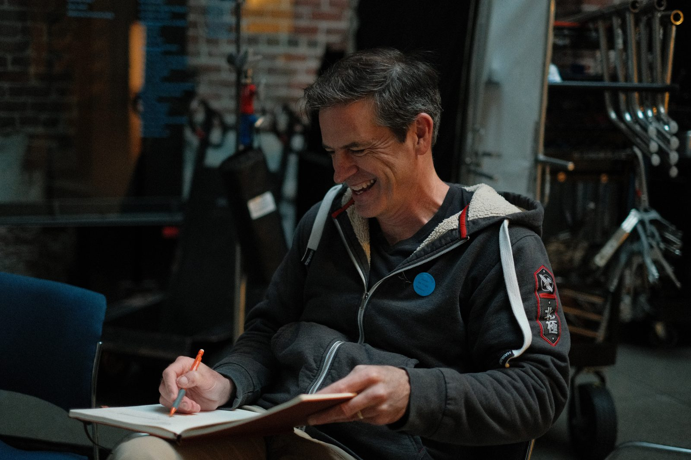

Case Study — Operations · 2024–
Building Story.
A film studio doesn't scale on taste alone. This is the part of the work that doesn't end up on screen; growing Story Co. from a handful of people into a full-stack production studio with a sister company.
01 — 2024
A small team with a big dream.
I joined Story on day one, when it was built mostly on vision, grit, and talent. The first job was making the studio real underneath the work, from contracts and cash flow to hiring and production infrastructure. We needed to build a lasting foundation so that every project in the future would start from solid ground.



02 — The machine
Systems that let creatives focus on creating.
Building systems that let our creative team give more time to their craft and less to the organizational tasks that pull time and energy away from the art. This covers anything from business operations, project management, and account management to day-to-day logistics. By optimizing for ease, clarity, and efficiency, we've been able to build internal tools that scale and iterate as quickly as we do.



03 — Premieres
Proof in numbers (and theater seats).
Fans continue to pack our premieres, oftentimes selling them out, and the numbers keep compounding: more fans, more clients, bigger budgets, more films shipped, more people watching. Each premiere is curated to be an experience; made with Bay Area crews for audiences that want to support local talent. We're working to bring back the excitement of going to see movies in theaters with friends and fellow movie lovers.



04 — 2026
A full-stack studio, a sister company, and more to come.
The business is a flywheel built to fund the art. That's the foundation for what's next: shows and films that reach large audiences and still land close to home; stories about abundance, told to make people believe that by pursuing their ideas they could make the world a better place. Because they could.


“Discipline is freedom.”